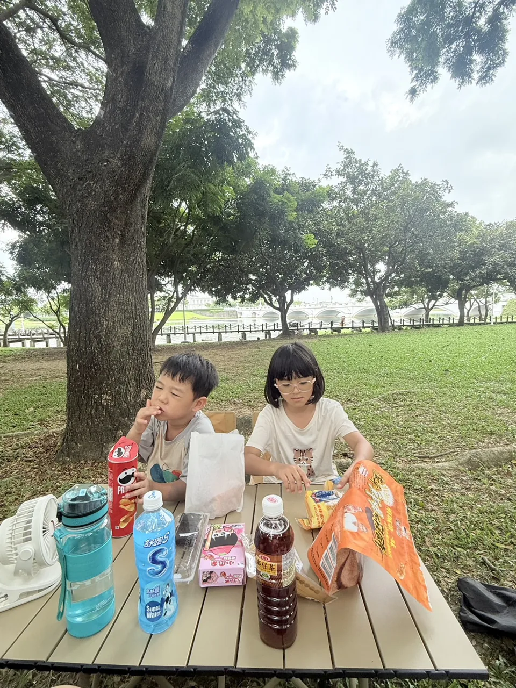

5–10 分鐘・兩人輪流・家庭照片
📷 小乖米米的照片線索盒
出題的人偷偷看一張家庭照片，再把照片藏起來；猜題的人聽三條提示，猜是哪一個回憶。
小乖 先偷偷看

記住照片中的線索
先看人物，再看身邊的小東西
輪到 米米 猜
答案揭曉
就是這一張！
一起說說：你最先想到的是哪個線索？
🎉
五回合完成！
小乖和米米一起把家庭回憶變成了線索。
怎麼玩
- 偷偷看：只有出題的人看照片，記住人物、表情、動作和背景。
- 藏起來：按下按鈕後把手機交給猜題的人，再逐條顯示提示方向。
- 一起揭曉：猜到後看答案，下一回合由小乖、米米交換角色。
照片皆為家長已核准素材，嵌入前已移除 EXIF metadata。